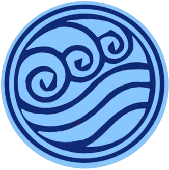
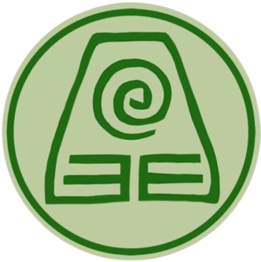

Long ago, the four nations lived together in harmony. Then, everything changed when the Fire Nation attacked. Only the Avatar, master of all four elements, could stop them, but when the world needed him most, he vanished. Fifty years have passed and the world has begun to lose hope that the avatar will ever return. A new era has begun. The world is divided and young benders from all over the world must make their own legend.
 